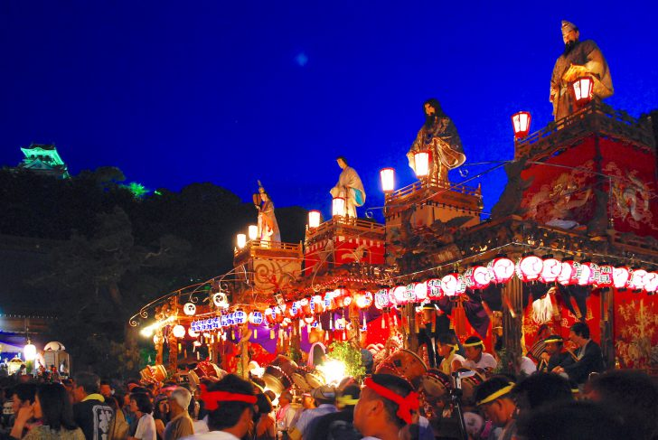
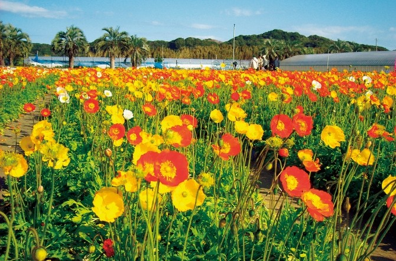
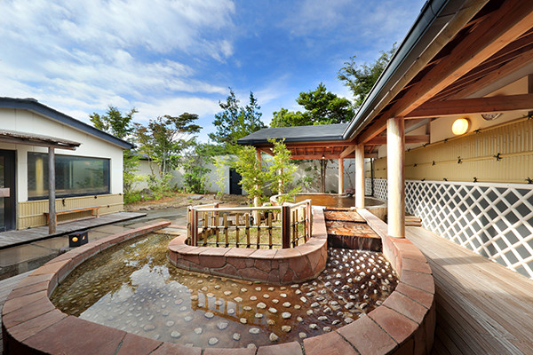

里見祭り
豊かな自然
癒しの温泉
館山
癒やしの街、館山
学生も、社会人も、老後のおじいちゃんおばあちゃんも、老若男女が来て癒やされる日々を提供する。それが館山です
夕日の見える海岸
館山の海岸は、関東有数の真っ赤に染まる夕日スポットです。その感動をあなたに
東京から手軽に来れる青い海
時間が空いたら館山へ、居間のソファに腰掛ける気軽さで。海らしい海である鏡ケ浦でマリンスポーツに挑戦しませんか
自然だけじゃない、歴史も、グルメも
田舎だからって自然だけじゃありません。里見の歴史とオシャレなご飯を楽しんでいってください。